무선설비기사 (2021-10-02 기출문제)
1과목: 디지털 전자회로
1. 다음 회로에서 제너 다이오드에 흐르는 전류는? (단, 제너 다이오드의 파괴전압은 10[V]이다.)
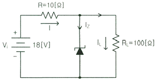
- 0.5[A]
- 0.7[A]
- 1.0[A]
- 1.7[A]
(정답률: 79%)

2. 다음 그림에서 1차측과 2차측의 권선비가 5:1일 때 1차측의 입력전압 Vrms=120[V]이다. 다이오드가 이상적이고 리플이 작다고 가정하면 직류 부하전류는 약 얼마인가?
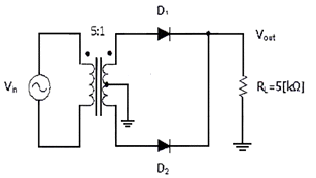
- 1.7[mA]
- 3.4[mA]
- 5.1[mA]
- 6.8[mA]
(정답률: 54%)
3. 다음과 같은 블록도에서 출력으로 나타나는 파형이 적합한 것은?
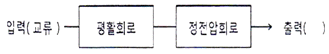
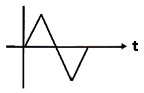
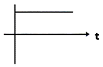
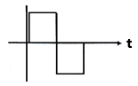
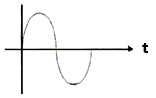
(정답률: 84%)
4. 다음 중 캐스코드 증폭기에 대한 설명으로 틀린 것은?
- 입력단은 공통베이스, 출력단은 공통이미터로 구성된 증폭기이다.
- 전압 궤환율이 매우 적다.
- 공통베이스 증폭기로 인해 고주파 특성이 양호하다.
- 자기 발진 가능성이 매우 적다.
(정답률: 72%)
5. 다음 그림과 같은 회로에서 결합계수가 0.5이고, 발진주파수가 200[kHz]일 경우 C의 값은 얼마인가? (단, π=3.14 이고, L1=L2=1[mH]로 가정한다.)
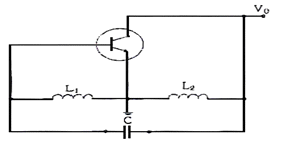
- 211.3[uF]
- 211.3[pF]
- 422.6[uF]
- 422.6[pF]
(정답률: 78%)
6. 다음 그림과 같은 발진회로에서 높은 주파수의 동작에 적절한 발진회로 구현을 위한 리액턴스 조건은 무엇인가?
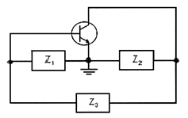
- Z1=용량성, Z2=용량성, Z3=용량성
- Z1=유도성, Z2=유도성, Z3=유도성
- Z1=유도성, Z2=용량성, Z3=용량성
- Z1=용량성, Z2=용량성, Z3=유도성
(정답률: 87%)
7. 다음 중 연산증폭기의 응용회로가 아닌 것은?
- 부호변환기
- 배수기
- 교류전류 플로워
- 전압-전류 변환기
(정답률: 74%)
8. 다음 차동증폭 회로에서 주어진 전압 및 전류 조건에 맞는 직류 IV-곡선으로 맞는 것은? (단, IRC1=IRC2=3.25[mA], VE=0.7[V]이다)
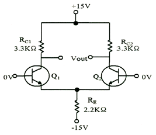
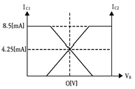
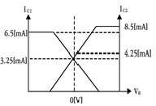
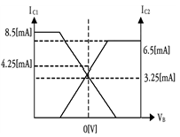
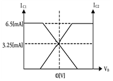
(정답률: 80%)
9. 다음 중 OP-AMP 성능을 판단하는 파라미터로 관련이 없는 것은?
- Vio(입력 오프셋 전압)
- CMRR(동상 신호 제거비)
- IB(입력 바이어스전류)
- PIV(최대 역 전압)
(정답률: 81%)
10. 발진회로의 출력이 직접 부하와 결합되면 부하의 변동으로 인하여 발진주파수가 변동된다. 이에 대한 대책이 아닌 것은?
- 정전압 회로를 사용한다.
- 발진회로와 부하 사이에 완충증폭기를 접속한다.
- 발진회로를 온도가 일정한 곳에 둔다.
- 다음 단과의 결합을 밀 결합으로 한다.
(정답률: 83%)
11. 다음 중 아날로그 신호로부터 디지털 부호를 얻는 방법이 아닌 것은?
- PM(Phase Modulation)
- DM(Delta Modulation)
- PCM(Pulse Code Modulation)
- DPCM(Differential Pulse Code Modulation)
(정답률: 84%)
12. 포스터 실리 검파 회로와 비검파 회로와의 검파 감도 비는?
- 1:3
- 3:1
- 1:2
- 2:1
(정답률: 80%)
13. FM수신기에 사용되는 주파수변별기의 역할은?
- 주파수 변화를 진폭 변화로 바꾸어준다.
- 진폭 변화를 위상 변화로 바꾸어준다.
- 주파수체배를 행한다.
- 최대주파수편이를 증가시킨다.
(정답률: 81%)
14. 다음 중 4진 PSK에서 BPSK와 같은 양의 정보를 전송하기 위해 필요한 대역폭은?
- BPSK의 0.5배
- BPSK와 같은 대역폭
- BPSK의 2배
- BPSK의 4배
(정답률: 78%)
15. 다음 중 저역 통과 RC회로 시정수가 의미하는 것은?
- 응답의 위치를 결정해준다.
- 입력의 주기를 결정해준다.
- 입력의 진폭 크기를 표시한다.
- 응답의 상승속도를 표시한다.
(정답률: 68%)
16. 다음 회로는 무엇을 가리키는가?
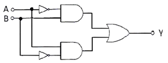
- 배타적 논리합 회로(Exclusive-OR)
- 감산기(Subtractor)
- 반가산기(Half adder)
- 전가산기(Full adder)
(정답률: 82%)
17. RS 플립플롭 회로의 출력 Q 및
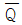
는 리셋(Reset) 상태에서 어떠한 논리 값을 가지는가?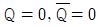
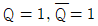
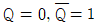
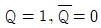
(정답률: 76%)
18. 다음 중 파형 조작 회로에서 클리퍼(Clipper)회로에 대한 설명으로 옳은 것은?
- 입력 파형에서 특정한 기준 레벨의 윗부분 또는 아랫부분을 제거하는 것
- 입력 파형에 직류분을 가하여 출력 레벨을 일정하게 유지하는 것
- 입력 파형중에 어떤 특정 시간의 파형만 도출 하는 것
- 입력의 Step전압을 인가하는 것
(정답률: 83%)
19. 다음 그림과 같은 회로의 논리 동작으로 맞는 것은?
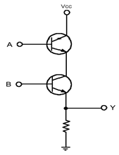
- OR
- AND
- NOR
- NAND
(정답률: 79%)
20. 다음 중 멀티바이브레이터의 동작 특성에 대한 설명으로 틀린 것은?
- 비안정 멀티바이브레이터는 한쪽의 상태에서 다른 쪽의 회로가 가진 시정수에 따라 교번 발진을 계속한다.
- 단안정 멀티바이브레이터는 외부로부터의 트리거에 의해 상태 전이를 일으켜도 일정한 시간이 지나면 다시 원래의 상태로 되돌아온다.
- 쌍안정 멀티바이브레이터는 입력펄스가 공급되기 전 까지는 그 상태를 계속 유지한다.
- 쌍안정 멀티바이브레이터는 1개의 펄스가 공급될 때 2개의 출력펄스를 가져 펄스의 주파수를 높이는데 이용한다.
(정답률: 74%)
2과목: 무선통신 기기
21. 다음 중 DSB와 비교한 SSB 방식의 특징으로 옳은 것은?
- 송신기의 소비전력은 SSB 방식이 적다.
- 송수신기의 회로는 SSB 방식이 간단하다.
- SSB 방식은 낮은 주파수 안정도를 필요로 한다.
- SSB 방식은 간섭성 페이딩에 의한 영향이 적다.
(정답률: 77%)
22. 다음 중 아날로그 위상고정루프방식에 사용되는 위상 검출기는?
- 이중 평형 믹서
- 배타적 OR
- 에지 트리거
- RS플립플롭
(정답률: 78%)
23. 진폭 12[V], 주파수 10[MHz]의 반송파를 진폭 6[V], 주파수 1[kHz]의 변조파 신호로 진폭 변조할 때 변조율은?
- 25[%]
- 50[%]
- 75[%]
- 100[%]
(정답률: 84%)
24. 다음 중 아날로그 송신설비와 비교하여 디지털송신설비를 설명한 것으로 틀린 것은?
- 적은 전력으로 광범위한 서비스지역을 확보할 수 있다.
- 데이터를 이용한 다양한 서비스가 가능하다.
- 좁은 면적에 시설할 수 있다.
- 단순한 편이나 운용비용이 매우 비싸다.
(정답률: 86%)
25. 위성 통신에 사용되는 주파수 대역 중 12.5[GHz]~18[GHz] 대역을 무엇이라고 하는가?
- C 밴드
- Ku 밴드
- Ka 밴드
- X 밴드
(정답률: 88%)
26. 수신된 펄스열의 눈 형태(Eye Pattern)를 관찰하면 수신기의 오류확률을 짐작할 수 있다. 수신된 신호를 표본화하는 최적 시간은 언제인가?
- 눈의 형태(Eye Pattern)가 가장 크게 열리는 순간
- 눈의 형태(Eye Pattern)가 닫히는 순간
- 눈의 형태(Eye Pattern)가 중간 크기인 순간
- 눈의 형태(Eye Pattern)가 여려 개 겹치는 순간
(정답률: 84%)
27. 다음 중 BPSK(Binary Phase Shift Keyiong) 변조방식에 대한 설명으로 틀린 것은?
- 정보 데이터의 심볼값에 따라 반송파의 위상이 변경되는 변조 방법이다.
- 동기검파 방식만 사용이 가능해 구성이 비교적 복잡하다.
- 점유대역폭은 ASK(Amplitude Shift Keying)와 같으나 심볼 오류 확률은 낮다.
- M진 PSK 방식의 대역폭 효율은 변조방식의 영향을 받는다.
(정답률: 77%)
28. QPSK(Quadrature Phase Shift Keying) 신호의 보(Baud)가 400[bps]이면 데이터 전송속도는 얼마인가?
- 100[bps]
- 400[bps]
- 800[bps]
- 1,600[bps]
(정답률: 87%)
29. 다음 중 레이다 기술에 대한 설명으로 틀린 것은?
- 야간이나 시계가 불량한 경우 레이다를 사용하면 안전한 항해를 할 수 있다.
- 거리와 방위를 구할 수 있으므로 목표물의 위치 및 상대속도 등을 구할 수 있다.
- 특수레이다의 경우 열대성 폭풍(태풍)의 위치와 강우의 이동 파악 등 다양한 용도로 사용할 수 있다.
- 기상조건에 영향을 많이 받으므로 주로 가시거리 내에서 사용된다.
(정답률: 90%)
30. 다음 중 레이다 시스템의 구성요소가 아닌 것은?
- 송신기(Transmitter)
- 수신기(Receiver)
- 안테나(Antenna)
- 블랙박스(Black Box)
(정답률: 94%)
31. 다음 중 거리측정장치 (DME : Distance Measurement Equipment)에 대한 설명으로 틀린 것은?
- 지상국 안테나는 무지향성 안테나를 사용한다.
- DME 동작원리는 전파의 전파속도를 이용한 것이다.
- DME는 보통 VOR(VHF Omnidirectional Radio Range) 또는 ILS(Instrument Landing System)와 함께 설치된다.
- 지상 DME국은 질문신호를 송신하고 항공기는 응답신호를 송신한다.
(정답률: 83%)
32. 다음 중 전파 지연시간을 이용하는 항법 장치는?
- VOR(Very High Frequency Omnidirectional Range)
- INS(Inertial Navigation System)
- DME(Distance Measuring Equipment)
- GPS(Global Positioning System)
(정답률: 83%)
33. GPS의 측위오차 중 가장 큰 오차를 발생시키는 원인은?
- 위성 위치 오차
- 전리층 굴절 오차
- 수신기 잡음 오차
- 다중경로의 오차
(정답률: 82%)
34. 다음 중 콘덴서 입력형 평활회로에 대한 설명으로 잘못된 것은?
- 직류 출력 전압이 높다.
- 역전압이 높다.
- 전압 변동률이 크다.
- 저전압, 대전류에 이용한다.
(정답률: 79%)
35. 단상 반파 정류회로에서 직류 출력전류의 평균치를 측정하면 어떤 값이 얻어지는가? (단, lm은 입력 교류전류의 최대치이다)
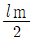
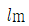
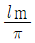
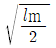
(정답률: 78%)
36. 공진곡선에서 공진시의 주파수를 1,000[kHz], 공진시의 전류를 10[A], 공진시 전류의 0.707배가 되는 두 점의 주파수를 각각 990[kHz]와 1,010[kHz]라 할 때 Q는 얼마인가?
- 40
- 50
- 60
- 80
(정답률: 78%)
37. 다음 중 AM송신기의 전력 측정방법이 아닌 것은?
- 진공관 전력계법
- 전구 부하법
- 안테나 실효저항법
- 열량계법
(정답률: 80%)
38. 변조지수가 60[%]인 AM변조에서 반송파의 평균 전력이 300[W]일 때, 하측파대 전력은 얼마인가?
- 9[W]
- 18[W]
- 27[W]
- 54[W]
(정답률: 59%)
39. 수부하법을 사용한 송신기의 전력 측정에서 냉각수 입구측의 온도가 4[℃], 냉각수 출구측의 온도가 7[℃], 냉각수 유량이 4[cm3/sec]일 때 송신기의 전력은 약 몇[W]인가?
- 28.2[W]
- 34.6[W]
- 46.8[W]
- 50.2[W]
(정답률: 79%)
40. 급전선상에 반사파가 없을 경우 전압 정재파비는 얼마인가?
- 0
- 1/2
- 1
- ∞
(정답률: 92%)
3과목: 안테나 공학
41. 주간에 20[MHz]의 신호로 원양에서 조업 중인 선박과 통신을 하고자 할 때 이용되는 전리층은?
- D층
- Es층
- E층
- F층
(정답률: 80%)
42. 전계강도가 3.77[V/m]인 자유공간에서 단위면적당 단위시간에 통과하는 전자파 에너지(Pointing power)는 약 얼마인가?
- 3.77π[mW/m2]
- 37.7[mW/m2]
- 120[mW/m2]
- 120π[mW/m2]
(정답률: 80%)
43. 수신기에 '슈-슈-' 하는 것 같은 연속적인 잡음이 혼입되는 현상으로 심한 눈보라나 모래바람 등이 불 때나 유성이나 자기 폭풍이 일어날 때 생기는 잡음은?
- 클릭(Click)
- 그라인더(Grinder)
- 히싱(Hissing)
- 튜닝(Tuning)
(정답률: 83%)
44. 다음 중 수정 굴절률에 대한 설명으로 틀린 것은?
- 수정 굴절률을 사용하면 구면 대기층에 대해서도 평면 대기층에 대한 스넬의 법칙을 적용할 수 있다.
- 표준대기에서 높이 h에 대한 M단위 수정 굴절률의 비 dM/dh는 음수이다.
- 수정 굴절률의 값은 높이와 비례 관계에 있다.
- 수정 굴절률의 값은 굴절률과 비례 관계에 있다.
(정답률: 78%)
45. 회절이 발생하지 않았을 때의 수신 전계강도를 Eo, 회절이 발생 했을 때의 수신 전계강도를 Ed라 하면, 회절계수는?
- Eo / Ed
- Ed / Eo
- (Eo / Ed)2
- (Ed / Eo)2
(정답률: 79%)
46. 다음 중 주파수 특성에 의해 페이딩을 분류할 때 동기성 페이딩에 해당하는 것만을 나타낸 것은?
- 감쇠형 페이딩과 선택성 페이딩
- 산란형 페이딩과 회절성 K-형 페이딩
- 회절성 K-형 페이딩과 감쇠형 페이딩
- 선택성 페이딩과 산란형 페이딩
(정답률: 77%)
47. 다음 중 전리층의 급격한 이동으로 반송파와 측파대가 받는 감쇠의 정도가 달라져서 생기는 페이딩에 대한 설명으로 틀린 것은?
- 선택성 페이딩이다.
- 주파수 다이버시티를 사용하여 방지할 수 있다.
- SSB(Single Side Band) 통신 방식을 사용하면 발생하지 않는다.
- AGC(Automatic Gaun Control) 장치를 사용하여 방지할 수 있다.
(정답률: 81%)
48. Balun 에 대한 설명으로 옳지 않은 것은?
- λ/2 다이폴을 동축 급전선으로 급전할 때 사용하면 좋다.
- 안테나와 급전선의 전자계 모드가 다른 경우에 사용한다.
- 집중 정수형과 분포 정수형이 있다.
- λ/2 다이폴을 평행 2선식으로 급전할 때 필요하다.
(정답률: 77%)
49. λ/2 Doublet안테나의 복사저항이 73.13[Ω] 안테나 전류가 1[A]일 때 복사전력은 약 얼마인가?
- 36.6[W]
- 73.1[W]
- 356.5[W]
- 731.3[W]
(정답률: 83%)
50. 임피던스가 50[Ω]인 급전선의 입력전력 및 반사전력이 각각 50[W]와 8[W]일 때의 전압 반사계수는?
- 0.86
- 0.40
- 0.16
- 0.14
(정답률: 72%)
51. 다음 중 도체에 의한 도파관의 특징으로서 옳지 않은 것은?
- 저항 손실이 적다.
- 방사 손실이 없고, 유전체 손실이 크다.
- 고역 필터(HPF)로서 기능을 한다.
- 취급할 수 있는 전력이 크다.
(정답률: 68%)
52. 다음 중 급전점이 전류 정재파의 파복이 되는 것은?
- 전압급전
- 전류급전
- 동조급전
- 비동조급전
(정답률: 78%)
53. 복사저항 450[Ω]인 폴디드다이폴(Folded Dipole) 안테나 두 개를 λ/4 임피던스 변환기를 사용하여 100[Ω]의 평행 2선식 급전선에 정합시키고자 한다. 이 때 변환기의 임피던스 값은?
- 212[Ω]
- 275[Ω]
- 300[Ω]
- 424[Ω]
(정답률: 80%)
54. 차단파장 λC = 10[cm]인 구형 도파관에 5[GHz]의 전파를 전송할 때 관내 파장 λg는 몇 [cm] 인가?
- 5.0[cm]
- 6.0[cm]
- 7.5[cm]
- 10.0[cm]
(정답률: 77%)
55. 다음 중 전자파내성(EMS)에 대한 설명으로 옳은 것은?
- 전자파 양립성이라고도 한다.
- 전자파장해(EMI) 분야와 전자파적합(EMC) 분야로 구분할 수 있다.
- 전기⦁전자기기가 외부로부터 전자파 간섭을 받을 때 영향 받는 정도를 나타낸다.
- 발생 원인으로는 대기잡음, 우주잡음, 대양 방사등과 같은 자연적인 발생원과 인공적인 발생원인으로 크게 구분한다.
(정답률: 80%)
56. 고출력 전자파(EMP)에 대한 방사성 방호성능 측정 방법에서 차폐성능을 측정하기 위한 절차로 바르게 나열한 것은?
- 측정계획의 수립 → 측정주파수 및 측정지점 확인 → 측정대상 및 시설주변의 전파환경 측정 → 시험값 측정 → 기준값 측정 → 차폐성능 평가
- 측정주파수 및 측정지점 확인 → 측정계획의 수립 → 측정대상 및 시설주변의 전파환경 측정 → 시험값 측정 → 기준값 측정 → 차폐성능 평가
- 측정계획의 수립 → 측정대상 및 시설 주변의 전파 환경 측정 → 측정주파수 및 측정지점 확인 → 기준값 측정 → 시험값 측정 → 차폐성능 평가
- 측정주파수 및 측정지점 확인 → 측정대상 및 시설 주변의 전파환경 측정 → 측정계획의 수립 → 시험값 측정 → 기준값 측정 → 차폐성능 평가
(정답률: 83%)
57. 장해전자파 측정기의 주요 특성 중에서 검파기의 특성에 대해 잘못 설명한 것은?
- 준점두치형 검파형식을 갖는 전자파장해 수신기는 검파기의 방전시정수가 충전 시정수에 비교하여 대단히 크다. 이 때문에 중간주파 증폭회로에서 대역이 제한된 장해전자파의 첨두치에 가까운 값을 지시치로서 표시한다.
- 준첨두치형 전자파장해 수신기의 기본특성에서 충전 시정수의 값은 장해전자파에 의한 FM라디오의 송신장해와 장해전자파 레벨의 지시치가 양호한 상관관계가 되도록 객관적으로 평가한 실험에 의해 정해진 것이다.
- 평균치형 검파기를 갖는 전자파장해 수신기는 장해 전자파 입력에 대하여 포락선 형태인 중간주파 출력의 평균치를 지시기에 표시한 것이다.
- 첨두치형 검파기를 갖는 전자파장해 수신기는 장해 전자파 입력에 대하여 포락선 형태인 중간주파 출력의 점두치를 지시기에 표시한 것이다.
(정답률: 81%)
58. 다음 중 전파환경에 대한 설명으로 적합하지 않은 것은?
- 전자파 적합성에는 전자파필터와 전자파내성 등이 있다.
- 전자파 인체보호에는 전자파강도와 전자파흡수율이 있다.
- 전자파 환경은 크게 전자파 적합성과 전자파 인체보호기준으로 나눌 수 있다.
- 인체, 기자재, 무선설비 등을 둘러싸고 있는 전파의 세기, 잡음 등 전자파의 총체적인 분포 상황을 말한다.
(정답률: 80%)
59. 다음 중 단파대에서 주로 사용되는 안테나는?
- 롬빅안테나
- T형안테나
- 우산형안테나
- 역L형안테나
(정답률: 81%)
60. 300[MHz]의 전파를 사용하는 Single turn style 안테나의 적립단수를 4로 할 때 얻을 수 있는 이득은 약 얼마인가?
- 2.9
- 3.9
- 4.7
- 6.3
(정답률: 79%)
4과목: 무선통신 시스템
61. 다음 중 PCM(Pulse Code Modulation) 다중통신의 특징이 아닌 것은?
- 전송로의 잡음이나 누화 등의 방해에 강하다.
- 중계시마다 잡음이 누적되지 않는다.
- 경로(Route) 변경이나 회선 변환이 쉽다.
- 협대역 전송로가 필요하다.
(정답률: 80%)
62. 이동통신시스템의 다원접속방식 중 다수의 가입자가 하나의 반송파를 공유하여 사용하면서, 시간 축을 여러 개의 시간간격(대역)으로 구분하여 여러 가입자가 자기에게 할당된 시간의 대역을 사용하여 다른 가입자와 겹치지 않도록 하는 다중접속방식은?
- FDMA
- TDMA
- CDMA
- CSMA
(정답률: 86%)
63. 펨토셀이라 불리는 소형 저전력 실내 이동통신 기지국을 설치함으로써 얻을 수 있는 효과로 잘못 된 것은?
- 트래픽의 분산화
- 음영지역 해소를 통한 커버리지 증대
- 핫스팟에서의 데이터 전송속도 증대
- 매크로 기지국과의 간섭 감소
(정답률: 81%)
64. 중간 주파수를 동일하게 하여 주파수가 상이한 무선회선 방식과 상호접속이 가능하도록 하는 마이크로웨이브방식의 중계방식은?
- 헤테로다인 중계방식
- 복조 중계방식
- 직접 중계방식
- 무급전 중계방식
(정답률: 83%)
65. WCDMA 시스템에서 다음과 같은 기능을 담당하는 부분을 무엇이라 하는가?
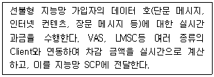
- GMLC (General Mobile Location Center)
- IPAS ( IP Accounting System)
- HLR (Home Location Register)
- INBH (Intelligent Billing Host)
(정답률: 83%)
66. 공공안전분야에서의 재해통신망에서 데이터 수집부의 역할은 무엇인가?
- 카메라 및 센서 데이터의 모니터링
- 센서 및 카메라를 이용한 재난·재해 데이터 측정
- 센서 및 영상정보의 저장, 가공, 필터링, 전송과 제어 기능
- 재난·재해의 모니터링과 경보발령
(정답률: 78%)
67. 공공안전통신망에서 LTE 기반 공공 안전망을 이용하는 이유가 아닌 것은?
- 글로벌 표준규격이기 때문에 장비의 제조 및 구축에 있어 비용이 절감된다.
- 멀티미디어 기반기술로 고속, 저지연, 빠른 호 설정과 보안성이 우수하다.
- 다양한 망 구축체계에서도 무선장비의 지원이 가능하다.
- 고궤도 위성 시스템과 직접 접속할 수 있어 광역화가 가능하다.
(정답률: 82%)
68. 다음 중 ATSC 1.0인 8-VSB 표준에 대한 설명으로 틀린 것은?
- 영상신호는 MPEG-2를 사용
- 음성 압축방식은 돌비 AC-3을 사용
- 잡음에 강하여 전국을 SFN으로 서비스 가능
- NTSC와 동일한 채널 주파수 대역폭(6[MHz])에서 구현
(정답률: 77%)
69. 다음 중 2.4[GHz] 대역을 사용하지 않는 단⦁근거리 무선 통신 기술은?
- Wireless LAN
- Home RF
- Bluetooth
- UWB(Ultra Wide Band)
(정답률: 79%)
70. 다음 중 Bluetooth 기술에 대한 설명으로 틀린 것은?
- 근거리 무선통신 기술로 양방향 통신이 가능하다.
- 2.4[GHz]의 ISM(Industrial Scientific Medical) 대역에서 통신한다.
- IEEE 802.11b와의 주파수 충돌 영향을 줄이기 위해 AFH(Adaptive Frequency Hopping) 방식을 사용할 수 있다.
- 프로토콜 스택의 물리계층에서 사용되는 변조 방식은 16QAM(Quadrature Amplitude Modulation)이다.
(정답률: 80%)
71. 다음 중 ISM 대역을 포함하고 있지 않는 주파수 대역은?
- 700[MHz] 대역
- 2.4[GHz] 대역
- 5[GHz] 대역
- 60[GHz] 대역
(정답률: 80%)
72. 다음 중 무선 LAN에서 사용하고 있는 전송방식이 아닌 것은?
- WDM
- OFDM
- DSSS
- FHSS
(정답률: 69%)
73. 무선 LAN 시스템에 대한 설명으로 틀린 것은?
- AP(Access Point)는 무선 접속을 통해 이동단말과의 무선 링크를 구성하는 무선 기지국의 일종이다.
- AP(Access Point)는 기존 유선망과 연결되어 무선 단말이 인터넷 서비스를 제공한다.
- 무선 LAN은 CSMA/CA와 같은 방법으로 매체를 공유하여 사용한다.
- 유선 LAN에 비해 전송속도가 높다.
(정답률: 86%)
74. 다음 중 통신 프로토콜의 일반적 기능과 관계 없는 것은?
- 연결 제어
- 흐름 제어
- 상태 제어
- 다중화
(정답률: 56%)
75. 다음 중 고정 광대역 무선 접속표준은?
- IEEE 802.4
- IEEE 802.8
- IEEE 802.11
- IEEE 802.16
(정답률: 74%)
76. 다음 중 부표 등에 탑재되어 위치 또는 기상 자료등을 자동으로 송출하는 무선설비는?
- 텔레미터(Telemeter)
- 라디오 부이(Radio Buoy)
- 라디오존데(Radiosonde)
- 트랜스폰더(Transponder)
(정답률: 83%)
77. 다음 중 유지보수 장애처리 종료 후 업무로 적합하지 않은 것은?
- 장애 해결 상황을 담당자에게 통보
- 장애 조치 결과 보고서를 작성
- 장애 발생 접수 및 보고
- 장애 근본 원인분석을 판단하여 재발방지 위한 대책 강구
(정답률: 89%)
78. 전위강하법으로 접지저항을 다음과 같이 측정되었을 때 접지저항은 몇 [Ω]인가?
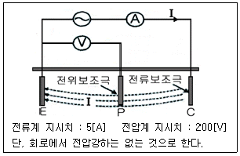
- 0.025
- 40
- 200
- 5000
(정답률: 78%)
79. 전류 세기를 측정하고자 할 때 가장 적합한 측정기는?
- 디지털 멀티미터
- 네트워크 분석기
- OTDR
- 융착접속기
(정답률: 87%)
80. 시스템의 전기적 특성에 대한 설명으로 틀린 것은?
- 사용 주파수 : 무선통신에서 송수신 정보가 실리는 대역을 의미하며 단위는 [Hz]를 사용한다.
- 송출 신호 전력 : 무선통신에서 출력신호를 의미하며 일반적으로 단위는 [dBm], [W] 등으로 표기한다.
- 광신호 세기 : 광 장비에서 출력신호를 의미하며 일반적으로 단위는 [dBmV]를 사용한다.
- 이득(Gain) : 입력되는 신호레벨의 세기 대비 출력 되는 신호레벨 세기를 의미한다.
(정답률: 78%)
5과목: 전자계산기 일반 및 무선설비기준
81. 다음 중 램(RAM)에 대한 설명으로 틀린 것은?
- 롬(ROM)과 달리 기억 내용을 자유자재로 읽거나 변경할 수 있다.
- SRAM과 DRAM은 전원공급이 끊기면 기억된 내용이 모두 지워진다.
- SRAM은 DRAM에 비해 속도가 느린 편이고 소비전력이 적고, 가격이 저렴하다.
- DRAM은 전하량으로 정보를 나타내며, 대용량 기억장치 구성에 적합하다.
(정답률: 82%)
82. 다음 중 운영체제가 제공하는 소프트웨어 프로그램이 아닌 것은?
- 스택(Stack)
- 컴파일러(Compiler)
- 로더(Loader)
- 응용 패키지(Application Package)
(정답률: 76%)
83. 다음 중 OSI 7 Layer의 물리계층(1 계층) 관련 장비는?
- 리피터(Repeater)
- 라우터(Router)
- 브리지(Bridge)
- 스위치(Switch)
(정답률: 79%)
84. 컴퓨터들 사이에 메시지를 전달하는 과정에서 지켜야할 규정을 정해 놓은 것을 프로토콜(protocol)이라 부른다. 다음 중 프로토콜을 구성하는 요소가 아닌 것은?
- 구분(Syntax)
- 의미(Semantics)
- 순서(Timing)
- 다중화(Multiplexing)
(정답률: 85%)
85. 다음 중 DoS 공격 중에서 통상적으로 시스템에서 허용된 65535 Byte보다 큰 IP 패킷을 발송하여 서비스 거부를 일으키는 형태의 공격은?
- Ping of Death
- IP Spoofing
- Teardrop
- Land Attack
(정답률: 83%)
86. DoS 공격엔 다양한 종류가 있다. 다음 중 웹서버 운영체제(OS) 자원을 고갈시키는 DoS는 무엇인가?
- Syn Flooding
- GET Flooding
- Teardrop
- Syn Cookie
(정답률: 82%)
87. 다양한 보안 솔루션을 하나로 묶어 비용을 절감하고 관리의 복잡성을 최소화하며, 복합적인 위협 요소를 효율적으로 방어 할 수 있는 솔루션은?
- UTM (Unified Threat Management)
- IPS (Intrusion Prevention)
- IDS (Intrusion Detection System)
- UMS (Unified Messaging System)
(정답률: 84%)
88. “사용자가 인터넷을 통해 서비스 제공자에게 접속하여 어플리케이션을 사용하고 사용한 만큼 비용을 지불한다. 서비스가 운용되고 있는 서버에 대한 운영체제, 하드웨어, 네트워크는 제어할 수 없고 오직 소프트웨어만 사용할 수 있는 서비스는 무엇인가?
- PaaS
- SaaS
- IaaS
- NaaS
(정답률: 83%)
89. 다음 중 신고로서 무선국 개설이 가능한 경우가 아닌 것은?
- 적합성평가를 받은 무선설비를 사용하는 아마추어국
- 발사하는 전파가 미약한 무선국 또는 무선설비의 설치공사가 필요없는 무선국
- 수신전용의 무선국
- “대가에 의한 주파수할당” 규정에 의하여 주파수할당을 받은 자가 전기통신역무 등을 제공하기 위하여 개설하는 무선국
(정답률: 75%)
90. 할당 받은 주파수의 이용기간 중 대가에 의한 주파수 할당과 심사에 의한 주파수 할당의 이용기간의 범위가 맞게 짝지어진 것은?
- 10년, 20년
- 20년, 10년
- 5년, 10년
- 10년, 5년
(정답률: 80%)
91. 평수구역 안에서만 운항하는 선박(여객선 및 어선 제외)의 의무선박국의 정기검사 유효 기간은?
- 1년
- 2년
- 3년
- 5년
(정답률: 80%)
92. 무선국의 개설 허가 시 심사해야 할 대상이 아닌 것은?
- 주파수지정지 가능한지의 여부
- 기술기준에 적합한지의 여부
- 무선종사자의 자격과 정원이 배치기준에 적합한지의 여부
- 개설목적을 달성하는데 최대한의 주파수 및 안테나공급전력을 사용하는지의 여부
(정답률: 83%)
93. 거짓으로 적합성평가를 받은 후 그 적합성평가의 취소처분을 받은 경우에 해당 기자재는 얼마 이내의 기간 동안 적합성평가를 받을 수 없는가?
- 1년
- 2년
- 3년
- 5년
(정답률: 80%)
94. 아마추어국의 개설조건 중 무선설비의 안테나공급 전력은 최대 몇 와트 이하이어야 하는가? (단, 이동하는 아마추어국의 경우는 제외한다)
- 100[W]
- 200[W]
- 500[W]
- 1,000[W]
(정답률: 79%)
95. 우주국과 통신을 하기 위하여 지구에 개설한 무선국은?
- 우주국
- 위성국
- 지구국
- 지구우주국
(정답률: 83%)
96. 적합인증을 받고자 하는 자가 제출하여야 하는 서류가 아닌 것은?
- 적합 인증신청서
- 사용자설명서
- 적합성평가기준에 부합함을 증명하는 확인서
- 지정시험기관의 장이 발행하는 시험성적서
(정답률: 79%)
97. 방송통신의 진흥을 위하여 기술정보의 제공 등 기술지도를 할 수 있는 자는?
- 문화체육관광부장관
- 산업통상자원부장관
- 정보통신진흥협회회장
- 과학기술정보통신부장관
(정답률: 86%)
98. 일반적인 경우 통신관련 시설의 접지저항은 몇 []이하를 기준으로 하는가?
- 10[Ω]
- 50[Ω]
- 100[Ω]
- 500[Ω]
(정답률: 79%)
99. 무선설비의 안전시설기준에서 정하는 발전기, 정류기 등에 인입되는 고압전기는 절연차폐체 내에 수용하여야 한다. 다음 중 고압전기에 포함되는 것은?
- 220 볼트를 초과하는 교류전압
- 220 볼트를 초과하는 직류전압
- 500 볼트를 초과하는 교류전압
- 750 볼트를 초과하는 직류전압
(정답률: 85%)
100. 적합인증을 받아야 하는 대상기기 중 틀린 것은?
- 무선방위측정기
- 경보자동 전화장치
- 전계강도측정기
- 네비텍스수신기
(정답률: 79%)
D2 다이오드가 동작하면서 전류가 흐르게 되는데, 이 때 전류의 크기는 전압과 저항에 의해 결정됩니다. 전압은 10[V]이고, 저항은 10[Ω]이므로 전류는 10[V] / 10[Ω] = 1[A]가 됩니다.
하지만 D2 다이오드는 정방향 전압이 걸려있을 때의 최대 전류가 0.7[A]이므로, 이 전류 이상으로는 파괴될 가능성이 있습니다. 따라서 D2 다이오드에 흐르는 전류는 0.7[A]가 됩니다.
따라서 정답은 "0.7[A]"입니다.